Utilizing Data to Bridge the Gap Between Humans and Technology
Hello, I am Hannah Moon!
I love to play with lots of different techniques; from statistics to machine learning, interactive data visualization, and design thinking.
I embody empathy and sympathy when developing tools and platforms because technology and science should empower humans' ability to create tomorrow that is better than today.
If you want to grab a tea or have things to discuss about, please drop me a line at hyunm@andrew.cmu.edu.
Teaching Mentor, Design,Technical Design, Production Management
MY TOOL BOX
Research
I am strong at conducting A to Z user research, including interviews, contextual inquiry, quantitative and qualitative research, survey design and usability testings to reveal user's core needs and transform them into business opportunities.
Computer Coding
I am familiar with R and Tableau for data analysis and data visualization. I can build high fidelity prototypes with HTML, CSS, and Javascript. I also have programming experience in Python.
User Experience and User Interface Design
I am strong at framing ambiguous problemes and transforming data into creative solutions. I see problems from a holistic view point while putting the user at the center of ecosystem.
Journey
It has been ecstatic!
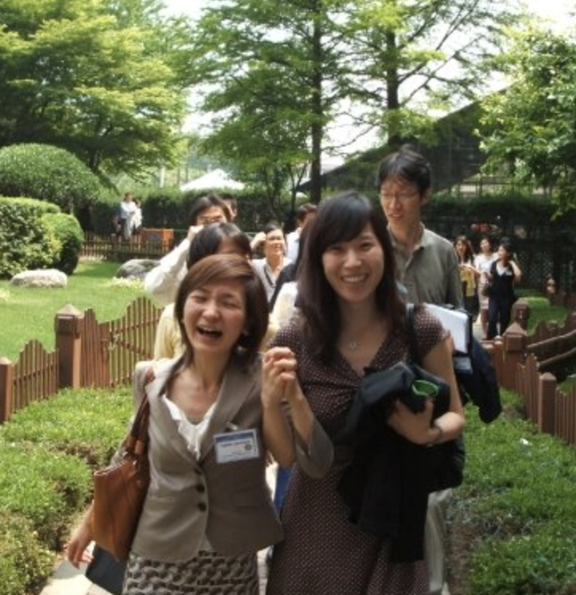
Until 2008
Grew up in Seoul, South Korea
Grew up in a soul of globe, Seoul, South Korea. Learned rich culture and met amazing people from all over the world. My dream grew bigger and bigger. I knew that I would study in the U.S. one day.
2009-2015
Studied English / AAS in Design
Assimilated into new culture. Explored to be a designer. Met so many good people. Hosted my first public show.
Broad Casted by Radio Disney! Inspired young students with my personal story! The theme of the talk was "How to make dream comes true."
2015
Technical Designer
Eye opening experience to work for major U.S. retail brands as a part of design team. Learned about growing e-commerce industry. Collaboate creative work with various teams as well as oversea vendors.
Life changing experience. Working as a workforce development manager and an instructor for underserved population completely pivoted my life perspective. Learned to write and win grants, designed salesforce information system, developed workforce training curriculum, impacted on adult learners, and mastered social innovation. Worked with an amazing mentor, exposed myself to great community business owners, and witnessed how my small idea can grow big.
2019-2020
MS in Engineering, Carnegie Mellon University
Learend top notch technologies and design thinking methodologies. Involved in a lot of design projects, data analysis, coding works, and built IoT stuffs while being a research lead. Completed Master's thesis.
Became a consultant! Designed an web-app to connect underserved populations to local non-profit organizations in a rust belt city. Conducted qualitative and quantitative research, executed user research, designed communication flow, analysed Data, and built go to market strategy.
As a research assistant, and a project manager, I've been collecting data, developing front end web-app, and working with an amazing team of NLP engineers and researchers.
More
to
come!
Reach out
I would love to hear from you! If you want to grab a cup of coffee or tea with me, please reach me out at:
2020 PNC Digital Experience Team's Capstone Project.
Platform: Mobile App, API
Project Type: Group Project
My Role: User Researcher, Interaction Design, Data Analysist, Business Strategy
Tools: Adobe Suite(XD, AI), Invision, Tableau
Timeline: June - July 2020
ABOUT PRODUCT
We created "The Student Select" that offers delightful reward donation user experience for college students. Each user can customize personalized interface as well as tailored donation portfolio. We wanted to make sure that entire user experience should enchanted for student users. We embodied the new feature of reward program onto preexisting personalized mobile banking system. Therefore, students can sign up for “We Donate Reward” program with one click. The high-fidelity sample can be seen here.
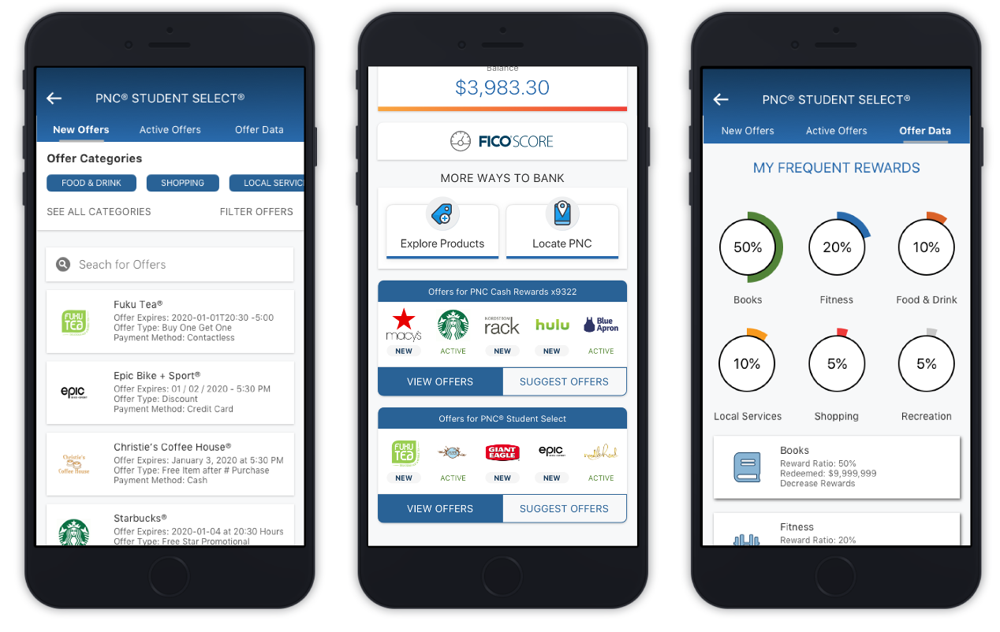
MY CONTRIBUTION
Mainly contributed in User Research, Quantitative and Qualitative Research, Stakeholder's Map & Personas Design, TAM/SAM/SOM Analysis, Seamless Information Architecture, and A/B Testing. I spearheaded the UX direction for two key project priorities: first, deprecate the pre-existing apps on the App Store and second, embodying the innovative feature into pre-existing user interface with a more efficient API system in order to create a consistent viewing/donating experience for PNC customers.
The Problem
Student customers are not able to support local businesses with the current contactless payment option because most of local businesses accept traditional payment options: Cash and credit cards. PNC wants to improve the local business engagement.
OPPORTUNITY
"How might we encourage college students to support local businesses by PNC’s reward program?"
FOCUS
Our team focuses on helping student users to support local business they do care and would support with their accumulated reward points. We pay extra attention on creating seamless experience for students while provide feeling of rewarding to help local businesses.
PROCESS
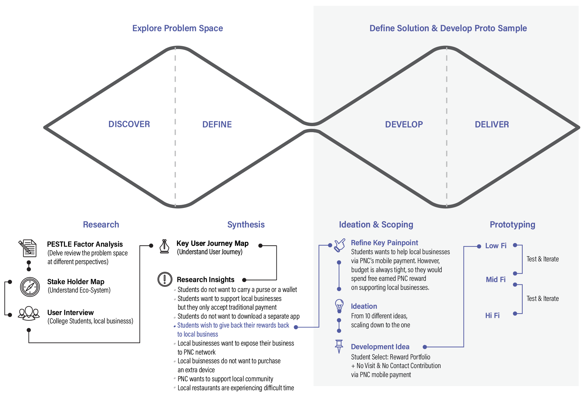
We first narrowed down our problem scope by conducting user interviews with students as well as through thorough secondary research. Through this, we were able to build out a user journey map of the process of a student spending money and identified some key pain points. During the stages of choosing the business and processing payments, students tended to have a hard time discovering or connecting with local businesses because most information traveled through word of mouth and it was difficult to know any personal stories of the local businesses. Students also found it hard to compare business options and their benefits, and would often just turn to the larger businesses that 55 seconds they were familiar with. Especially because students tended to value their convenience more than supporting a cause, they would easily give up on going through searching all the different rewards and comparing the local business options.
Lastly, because many local businesses have limited payment methods (for example, many local places accept cash only), students had to inconveniently carry their wallets just in case when they were visiting a new local place.
LITERATURE REVIEW
Our product development journey began from looking at the original problem statement at different perspectives. Based on our primary market research, number of meetings, and a mentor session, the team rephrase the problem statement as an opportunity space. Our team was new to the commercial banking interface, so we began to understand the current interface first before we dive into conducting secondary research. Then, we conducted a literature review on 15 papers as well as numerous numbers of articles focusing on the following subject:
Designing a social innovation in banking industry
Beyond mobile banking
Community engagement
Pains of local businesses
Gen-Z’s Payment Pattern
We conducted PESTLE(Politics, Economy, Social, Technology, Law, Environment) factor analysis to see the problem in holistic view. Then, we synthesized our findings and design the high level of guideline of primary interview.
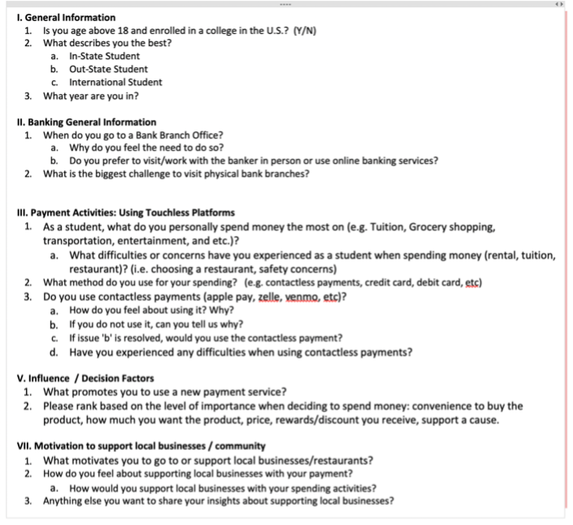
Literature Review
Our team was entirely new to the field of accessibility, so we had decades of research to review. We split up accessibility over a few domains and studied the field over about a month.
We created a secondary research report for our clients, that synthesized the majority of our findings in our literature review. We wanted to go beyond dividing disabilities into the broad categories of visual, cognitive, auditory and motor. We found that there was overlap between those four categories and the solutions that exist. Instead we broke our research into conditions, limitations and solutions. An excerpt from our report can be seen below:
Stakeholder Map
Once we finish to draw an entire eco system and we then used Venn and Tree Diagrams to understand the interaction amongst stake holders and flow of value. It became clear that there are three major stake holders we want to focus on eco eco-system and their desire, feasibility, and viability.
The service benefit should be:
Shared Economy Digital Hub
Easy reward tracking & Redeem Function
Emotional bondage between two key stake holders
Student can redeem their rewards for local businesses, make impact with the rewards given by PNC Student Select, Feel good to support local businesses.
For Local businesses, they provide on-going contents, improve services with increased earning, and have easy access to their customer pools.
For PNC, they can be a leader to support local businesses and student’s engagement in which helps to optimize local business while utilize small business experience data by providing
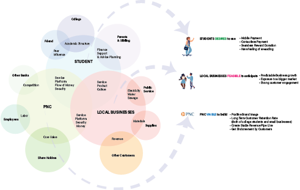
INTERVIEWS AND CONTEXTUAL INQUIRY
In order to better understand the student touchless payment experience and engagement with local businesses, we interviewed college students who are actively using contactless payment. We asked participants to explain what motivates them to use mobile payment, how they would contribute local business vitalization, and any challenges they have experienced.
Through observation and review the interview notes, we could see where college students could make the biggest impact on supporting local businesses, where they feel short, and the support they need. We do contextual inquiry to learn what is important to users and PNC.
Then we interviewed various college students, PNC’s college banking team, and a couple of local business. Primary research gave us a better understanding of PNC’s internal processes, mobile banking user flow, users payment process, and local businesses’ customer engagement via PNC mobile banking plat form.
PERSONAS
Based on the pain points that we decided to focus on, we created three personas in order to have a better idea of who and what needs our product would be serving. The three personas include Sonia (a busy student who wishes to support small businesses), Gabriel (an out-of-state new student who is unaware of local business options), and lastly Christie (a local business owner who wishes to expand her business). To serve the different needs of these three personas, we decided that our product would be an all-in-one platform that would allow busy or unaware student users like Sonia and Gabriel to quickly discover and compare local business options, rewards, and payment methods. By serving as a platform that students can use to learn and choose a local business, it would also help the business owners like Christie to promote their business and its benefits.
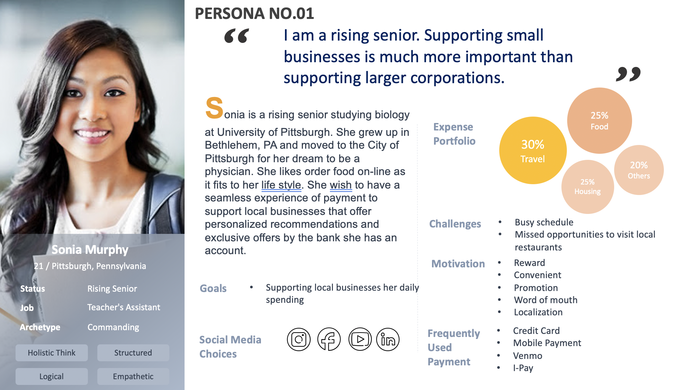
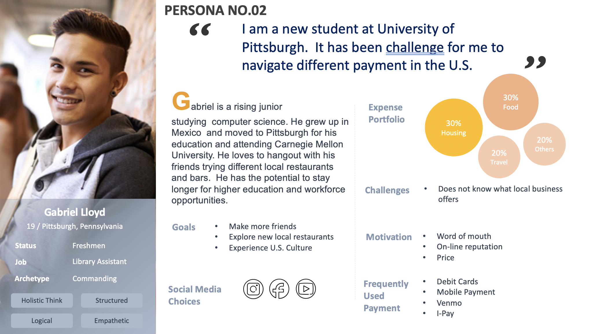
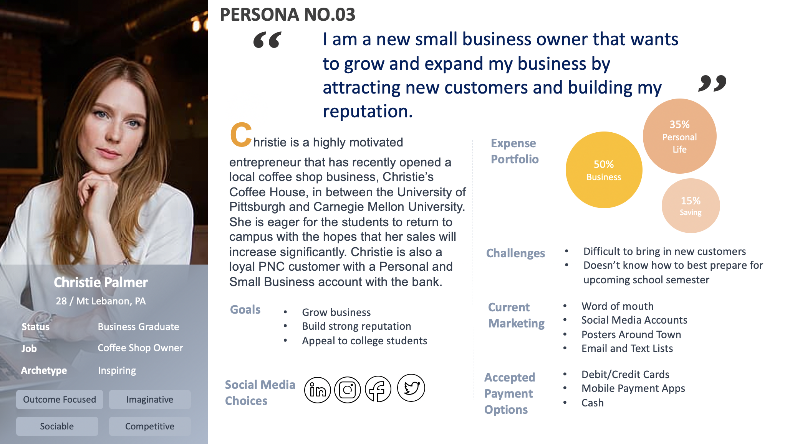
BUSINESS OPPORTUNITY
Market plan for students, so, to simplify, how are we going to promote the product to students? The team found that 75% of consumers plan to support small businesses more often. Also, 67% of consumers are more optimistic about shopping at local businesses. So, consumers already have the right attitude about supporting local businesses, and we’re just giving them a tool to help them do that.
The best way that we feel will get the point across is through word of mouth, promotion in the app and the use of PNC university partnerships. WOM can be used when students are signing up for a student banking account in person at a branch or talking with a recruiter at their campus. Promotion in the app can be as simple as a pop-up window when the service is implemented in an update or notifications for when new rewards are available or expiring. When promoting the service, it’s important to explain why it is useful. Two talking points that could be reflected in the marketing strategy is the use of contactless payments and supporting local businesses.
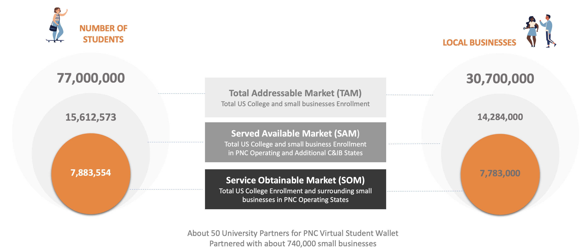
USER FLOW
After we gained full confident on developing product development opportunity and the problem we would tackle, we identified the possible issues we could tackle, we mapped them on to the user flow.
We focused on creating two user interface for student and local business users. Student experience seamless frontend interface while interacting with local business via PNC mobile banking. As for local business owners PNC’s backend workload could provide maximum value to add their profile with strong API support. The key feature was to smooth out reward point donation process and alerts system for reward donation opportunities.
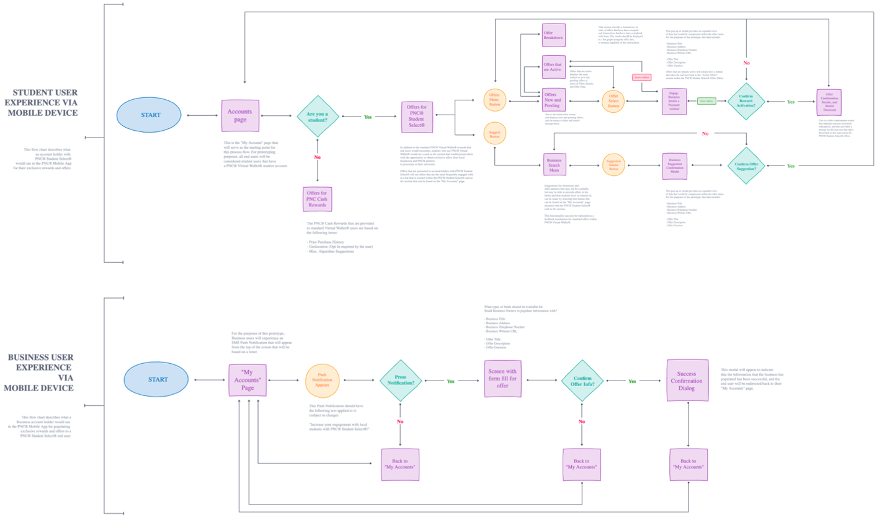
PROTO DEVELOPMENT AND USABILITY TESTING
Since our focus was on students and local business owners, connecting two stakeholders were a key feature we spent most of our energy during the proto typing process. We started by creating wire-framing and moved onto Low-Mid Fi proto sample for usability test.
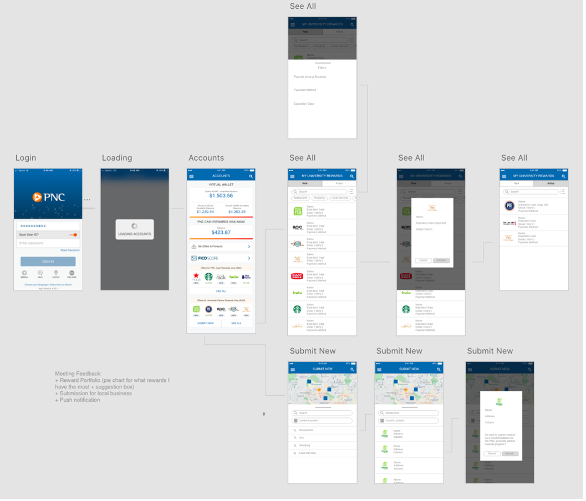
From the multiple tests, we were able to see gaps we have to work on. During the test, we focused on user interaction and encourage them to think aloud. User pointed out two features they would add. One was filtering function and the other one was creating portfolio of reward donation. We took some time to brainstorm how we would want the user to interact with our next prototypes and applied our findings to develop a Hi-Fi proto sample.
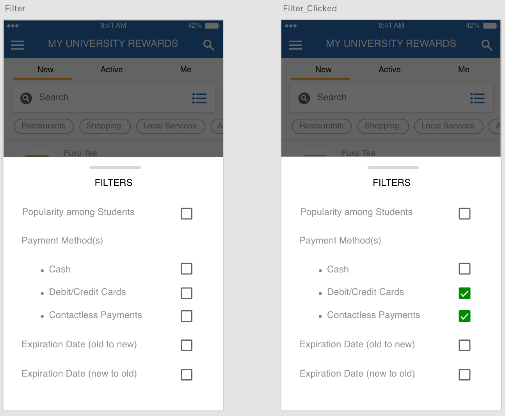
HI-FI PROTOTYPE AND FINAL DELIVERY
Based on our insights from earlier prototyping sessions, we built a final proto sample. In our first round of testing with student users, we learned that they prefer using the iPhone interface because they have a better sense of space on it. After couple of iteration, we went through while adding features from usability test, we finalize to develop an enchanted API application for PNC.
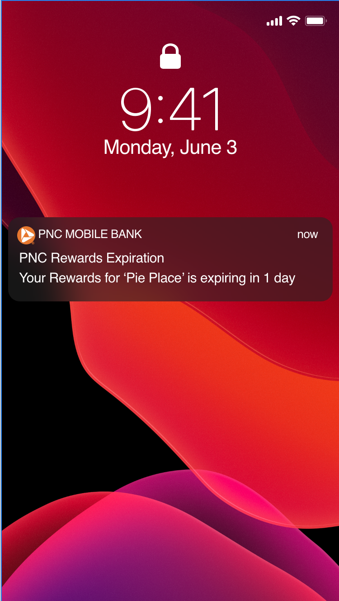
Visual Interface 1
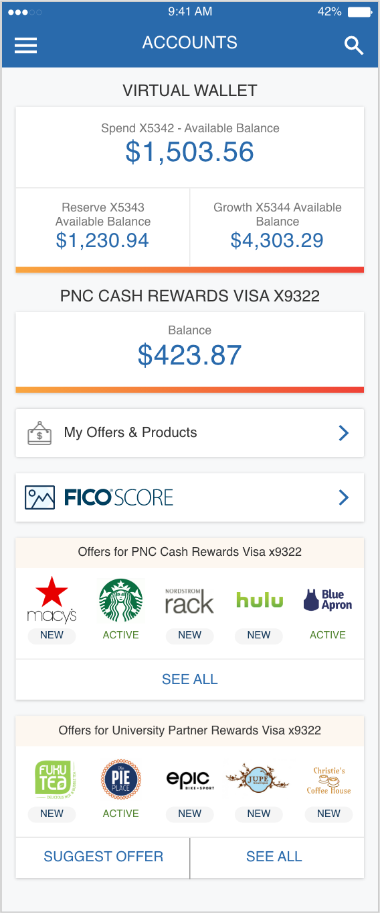
Visual Interface 2
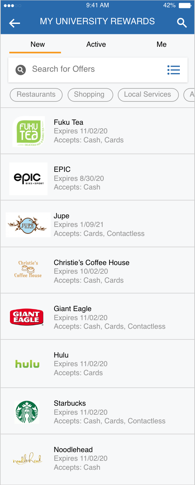
Visual Interface 3
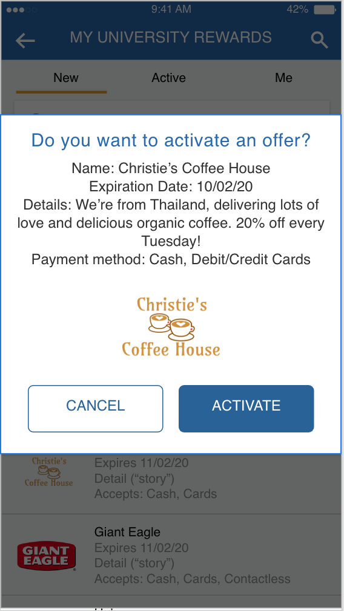
Visual Interface 4
Reflection
There are 30.2 million small businesses in the U.S. that are suffering due to unprecedented pandemic, but there are not many bank platform supporting them in a meaningful way. I hope our creation can make a positive movement to support local businesses.
Overall, it was great experience to lead the team and present vision of the impact PNC would make for local community.
Consideration
The proto need to be continuously iterated on the high-fidelity prototype and validate user's needs through conducting user feedback sessions.
Possibilities
Once proto sample is approved, The team have to create mock-ups that better showcase our product for A/B testing.
Challenges & Takeaways
Creating a project in a short time has been challenging yet fruitful experience. I personally hope that PNC adopt this initials product development opportunity and bring "Student Select" to life.
Next Step
Patent.Ai: Auto Patent Filing Tool
Please drop me a line if you want to see the work. You can reach me via email at hyunm@andrew.cmu.edu
KenNext, Workforce Development
Revitalizing a Rust Belt City in West Pennsylvania
Role: UX Researcher, Data Analyst, UI Designer, Business Strategist
Tools: Figma, Adobe XD, Adobe Suite
Solution
KenNext is a WebApp that connects underserved and under-employed populations in Alle-Kiski Valley with resources and employment opportunities through an engaging experience.
People living in New Kensington are having a hard time accessing information about social service and workforce development opportunities in Alle-Kiski Valley, West Pennsylvania. The communication gap in the city is severe amongst the poor and unemployed. They lack trust in the local ruling body and non-profit organizations and capacity to receive help. Training and job opportunities are often difficult to know due to diffused information channels. The goal is to create a solution for people to easily access training and jobs in order to move upwards the career ladder.
Exploring problem in New Kensington (Credits: TC Yang, Ussamma Bin Naved)
Opportunity
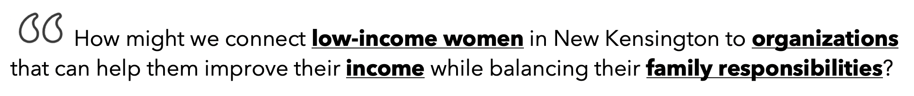
Design at a glance
KenNext is an WebApp which connects underserved and under-employed populations in Alle-Kiski Valley with resources and employment opportunities through an engaging experience.
DESIGN PROCESS
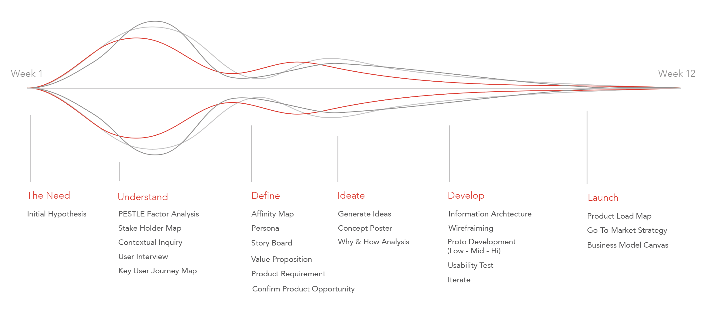
The Need
Outlining the key problem areas in New Kensington. It details out the communication gap as discussed in the problem statement and goes on to explore the unemployment landscape of the city. The team found barriers that limit the residents in moving towards the upcoming Industry 4.0 opportunities.
PESTLE FACTOR ANALYSIS
Starting with the secondary research, analysis of the PESTLE factors helped us understand the emerging trends and context of the problem area.
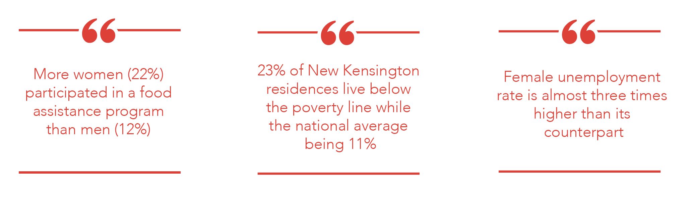
STAKEHOLDER MAP
This activity includes our initial brainstorming of all the people who are affected by the project, who have influence or power over it, or have an interest in its successful or unsuccessful conclusion.
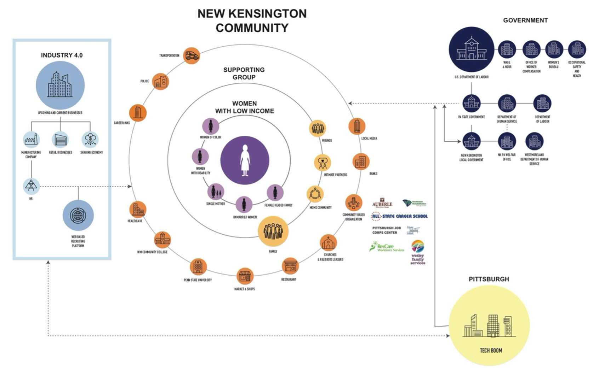
We mapped out of the list in terms of power and interest, as well as plotting the information flow between these stakeholders.
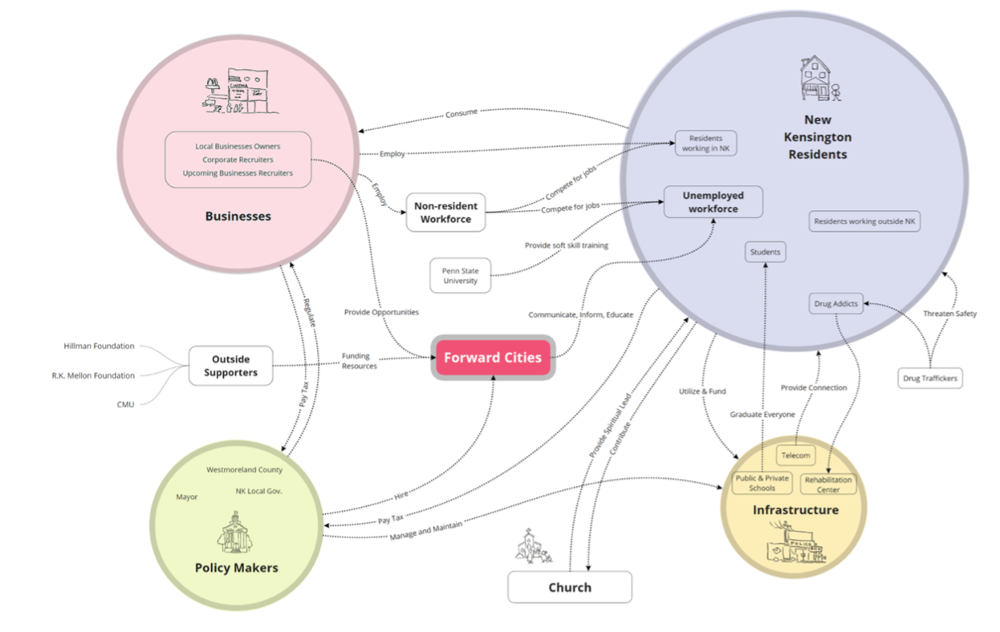
Contextual Inquiry / User Interview
The team conducted fieldwork throughout several phases. It began with interviewing residents at the local retail stores as well as the supporting organizations. Fieldwork pilots identified “communication channels”, “finding information” and “jobs” as key opportunity areas in New Kensington. During in-person interviews and directed storytelling, the team captured the core and subset activities in the key opportunity areas.
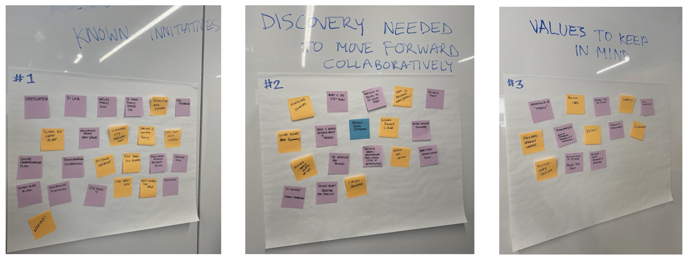
Clustering Contextual Inquiry
During in person interviews and directed storytelling, the team captured the core and subset activities in the key opportunity areas.
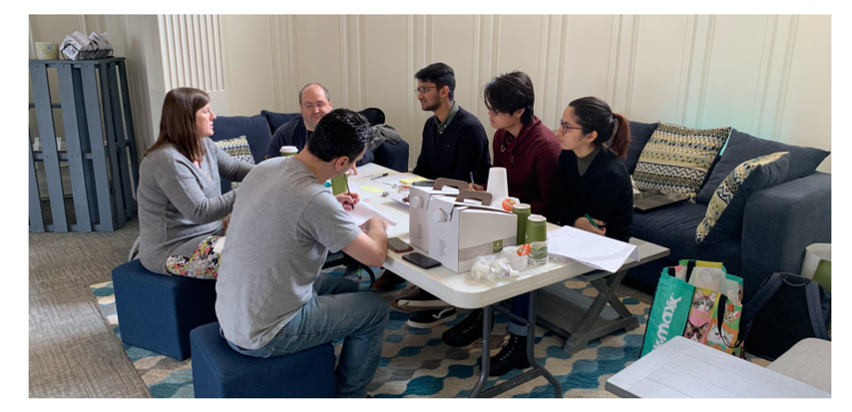
User Interview
Insights (Affinity Diagram)
The research data were synthesized using affinity mapping to derive insights, identify target users and product opportunity gaps.
a. People who need social services are recommended by families or social workers before transitioning to workforce training.
b. Existing services information is diffuse.
c. Existing platforms are not designed to be underserved population friendly.
d. People who’ve been in desperate living condition feel:
Frustrated trying to navigate new information
Overwhelmed by steps that they have to go through
They have a lack of supporting system
Hopeless and can easily give up when they face challenges
Therefore, it requires enormous courage to learn new skills for underserved populations.
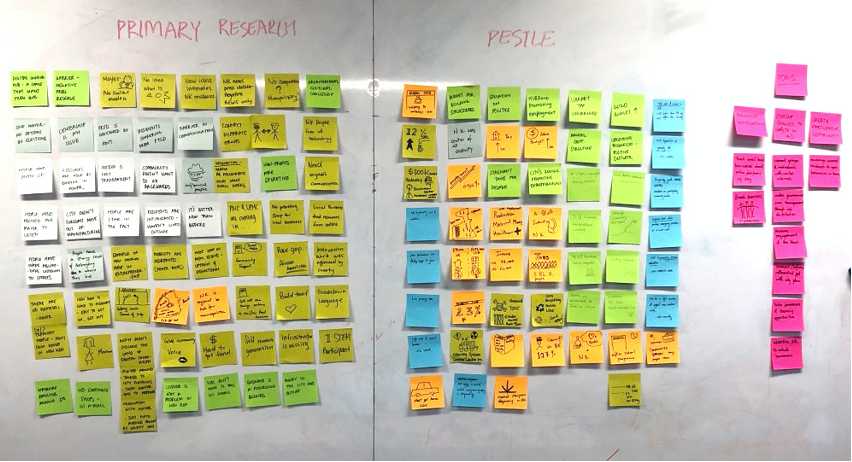
Affinity Diagram
Persona: Build Empathy with Users
Key User Journey: A life of Single Mom
The team synthesized all our data to draw a “User Journey Map” to clearly visualize the area for the MVP(Minimum Viable Product) opportunity.
Value Proposition Analysis
We examined the value that would be created in the market and for the users by pursuing this opportunity. We used the Value Opportunity Analysis framework which helps us to understand the usable, useful, and desirable aspects of any product/service.
There are 7 classes of value opportunities that are discussed to determine the product/service. They are - emotion, aesthetics, identity, ergonomics, impact, core technology, and quality. Each of these is expanded in a total of 23 attributes which are defined and discussed.
The team defined each value from the perspective of the primary user group (low-income group) and focused on their goals, responsibilities to balance work-life, technology access, digital literacy, and habits.
Product Requirement
After the VOA, we transformed the significant value opportunities into product requirements, and selected the 4 most important requirements as below:
Once we justified our product requirement, we made a summary of our work to confirm the Product Development Opportunity as below:
Guide low-income female residences (key stakeholders) to gain job competence skills.
Let key stakeholders build a self-curated network with social service supporting networks to reach financial independence.
Support discussions about resources with peers.
Design learning tools beyond text resources.
<
Ideation & Concepts Clustering
In the ideation phase, the team brainstormed multiple concepts. We used a variety of ideation methods such as: Crazy8, Rose-Thorn-Bud, and Reverse Assumptions. After concept clustering, the ideas were shortlisted to 4 preliminary concepts.
I break how to increase conversation rate into different phase: before onboarding – in progress –after progress. After talking with community leaders, we decided focus on onboarding process to connect users with supporting organizations.
Information Architecture
After the VOA, we transformed the significant value opportunities into product requirements, and selected the 4 most important requirements as below:
Wire Framing
After we defined the features, action and related information, we began to sketch wireframing based on all our accumulated knowledge.
Final Design
Reflection
Consideration
Because the web app stores personal data, we have a responsibility to protect user data and ensure that the data is being used ethically. This was a key concern from social benefit organizations because it is very important in forming trust between the supporting organizations and key stakeholders.
Possibilities
As the population of single parents is increasing without no suitable education tools, KenNext is a great solution to fill this market gap. The product also can be expanded to other persona groups, such as chronic homeless, additics, and homebound parents.
Challenges & Takeaways
This remains to be one of the most impactful projects that I have worked on so far in my UX career.
I wish we could enhance the mentorship function, but because of the trust issues within the community, we decided to wait until they trust this new platform.
LAMA: Joyous Student Community
Summer 2020 PNC Venture Vault
Expand PNC's offerings in the area of college student payment by offering a virtual payment system while developing their long-term financial portfolio via a digital networking hub.
Platform: Mobile App, Virtual Payment
Project Type: Group Project
My Role: User Researcher, Interaction Design, Data Analysist, Business Strategy
Tools: Adobe Suite(XD, AI), Invision
Methods:Contextual Data Analysis, Literature review, Survey, Stakeholder Map, Persona, TAM/SAM/SOM Analysis
Timeline: June - July 2020
ABOUT PRODUCT
The proposed product was to expand PNC's offering in the area of college student payment by offering an innovative credit card and a digital finance portfolio networking hub.
The Project Overview
The student focused platform does not exist although they have a great potential to be finance savvies upon graduation. Current holistic experience is not user friendly, so college students are having difficulties to fully understand the service benefit that PNC provides. A lot of them want to convert to other competitors' service because they provide a lot more college student focused virtual service, so they want to switch their account from PNC to other competitors.
OPPORTUNITY
"How might we enable college students to actively participate in their financial lives thereby making complex financial concepts accessible, useful, and delightful to them?"
The current online banking system is uniformed for all clients regardless of their background.
SOLUTION
PNC Student Executive program and its hub offers an innovative credit card and a digital networking hub where they can build their customized finance portfolio while interacting with their close network at the early stage of college life. A personal AI curator deliver daily briefing to college students and based on their interest. If students need more support, knowledgeable human bankers make virtual follow up appointment with them.
The Impact I Made
I was in charge of primary and secondary research and data analysis during the contextual research part. Later on, I backed our product proposal by providing robust data trend, unique advantages and learning experiences for client while aligning the vision of the impact the product would make.
FOCUS
Our team focuses on integrating technology that college tudents really needs. It is integrated into their daily lives with minimal effort, so they can stay on the top of their finance protfolio and already thihnk about future investment via a new innovative product.
PROCESS
The overall goal of the project is to find solutions to help college students to design their financial portfolio with robus PNC's supporting hub. Throughout the process, we interviewed college students, internal college student department, parents, and bankers. Upon complition of viability of the product, I conducted a multiple rounds of testings to enhance user experience that I intended for users.
LITERATURE REVIEW
Our product development journey began from looking at the generation Z who are attending colleges. I reviewed conducted a literature review on 5 papers as well as numerous numbers of articles focusing on the following subject:
Digital Centric: The zen Z is smart and tech and digital savvy generations, who hold smartphones in one hand and are ready to spend with the same devices. They use smart phones to socialize with their peers via Instagram, Snapchat, TikTok, and YouTube. They use SNS platform to tweets, tags, posts, likes, and uploads their opinion.
Catching: G-Z exhibit very short attention span compare to baby boomer, Gen-X, and Millennial. To appeal to G-Z and hold their mind from fast scrolling, they need to see creative, meaningful, and simple messages. All new information should be delivered in fun and creative manners.
Interactive Communication: They communicate via SNS platforms with short video script, emoticons, memes, and gif files. G-Z likes photos, voting, stickers, sliders, quizzes, reviews, and comments. They like to be a part of communication instead of being recivers like prior generation.
User Generated Content(UGC): UGC is recognized as increasingly important to destination marketing for G-Z. They easily make decision on spending and investing when value is unique to them.
INTERVIEW
PERSONA
SERVICE BENEFIT
The service benefit should be:
Student can redeem their rewards for local businesses, make impact with the rewards given by PNC Student Select, Feel good to support local businesses.
For Local businesses, they provide on-going contents, improve services with increased earning, and have easy access to their customer pools.
For PNC, they can be a leader to support local businesses and student’s engagement in which helps to optimize local business while utilize small business experience data by providing
Shared Economy Digital Hub
Easy reward tracking & Redeem Function
Emotional bondage between two key stake holders
Deloitte Applied AI
Won the 1st Place at The Jam Competition 2020
I was invited to join the competition and participated as a Data Analyst for Applied AI.
Main Event Poster - Deloitte Applied AI 2020
What is the JAM?
The JAM case engages teams of data scientists, developers, and designers in a simulation Applied AI project. In 40 minutes, students need to brainstorm about the problem, do research, define a solution, and present an optimal suggestion. The solution should include data analysis, strong design thinking, and engineering architecture. Each team has 3 minutes to present.
About Deloitte's Applied AI JAM Competition
Understand
Our team began to define the rooted causes of the problem before we move onto the research process. Then, the team analyzed the data supplied by Deloitte and dissected the problem: in our COVID-driven virtual world, how can universities increase student viewership of college football games?. We spent some time reframing the question and found ourselves asking how might we increase viewership by optimizing interactive experiences. The judges from Deloitte really liked how we reframed the problem statement because we embodied a human-centered design methodology to frame the problem.
Persona
By reframing the opportunity, our team created a precise and narrow scope for our solution. The team focused on creating interactive opportunities, such as offer interactive game experience at home which users can enjoy more playful experience at-home to engage with games on stadiums. We defined key personas. We divided viewrs into two; Frequent Viewers and Non-Frequent Viewers.
Data Analysis
The team decided to use regression model for data analysis because it can be designed to identify both of two personas we defined. We envisioned to find a correlation between different factors that can drive the regression output. We first developed a boxplot to have information on the variability or dispersion of the data. It gave us a good indication of how the values in the data are spread out.
Solution
The data analytic inspired us to create a real-time winner prediction game. Before the games begin the viewer can predict the game scores and main contributors to win the games. The game can be only played when it is on air in order to boost live viewership. If viewers can predict the game based on the live show with analytic report they can refer to predic a winner, it can be more fun than just watching games. By applying intuitive and clean UI/UX, we designed to make it easy for viewers who are new to the game prediction game.
Personal Take Away
It was a great experience to win the 1st place and work in a really friendly environment. Even though we were competing against each other, it was a friendly, yet comfortable atmosphere. Our team was creative and collaborative while integrating design, data science, and development concepts together. To read more about the competition, please click here.
East End Cooperative Ministry: Sew Forward Program
Integrate technology in production life cycle management
Adds value to the program by utilizing Saleseforce platform to monitor and manage the production task, assign tasks to employees and manage related documents and financial status of each project.